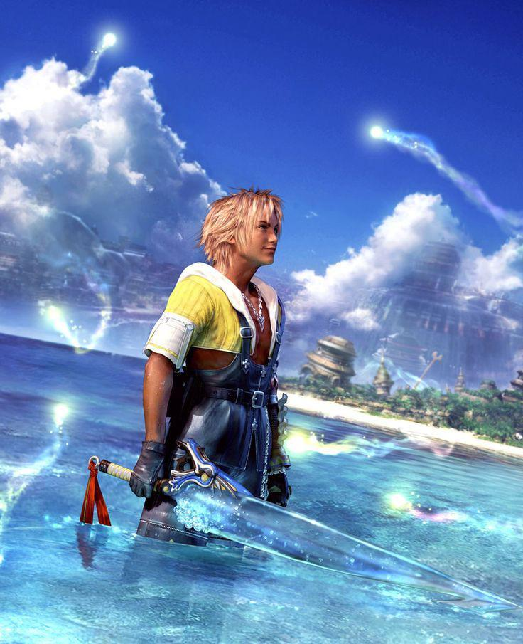
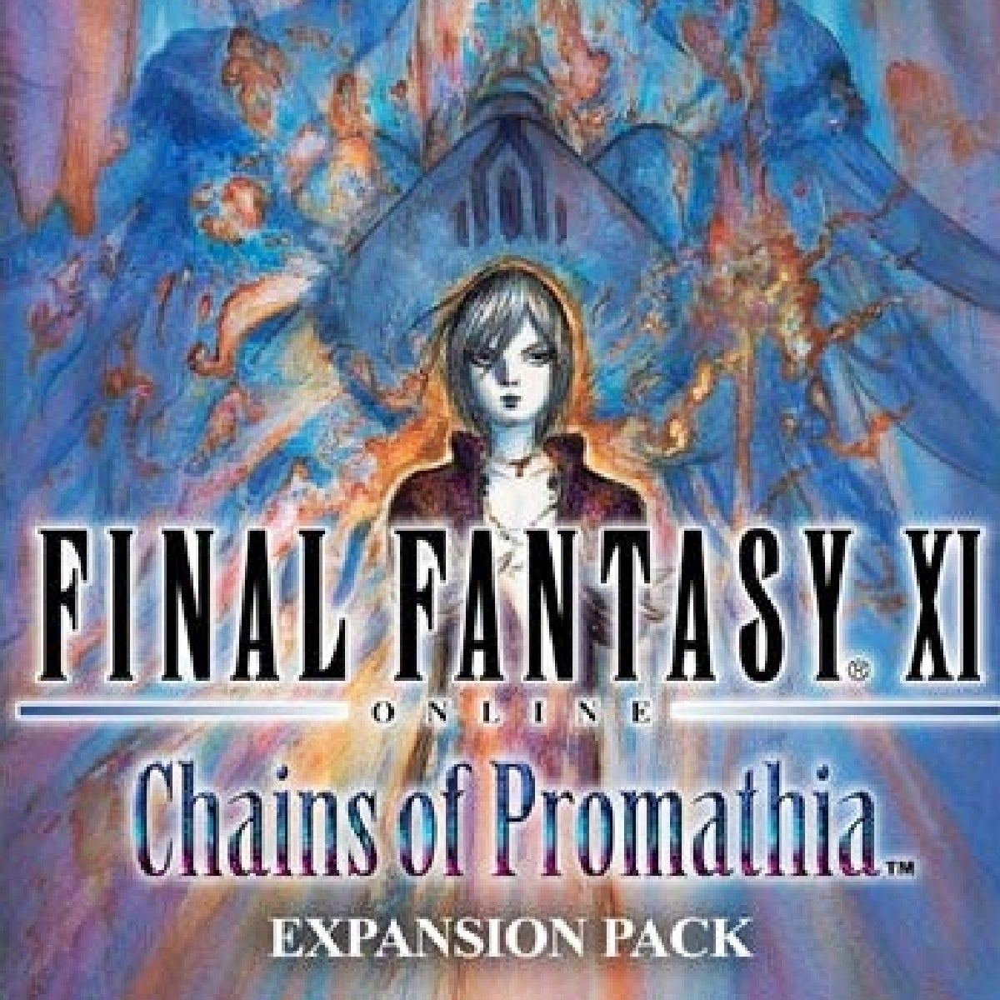
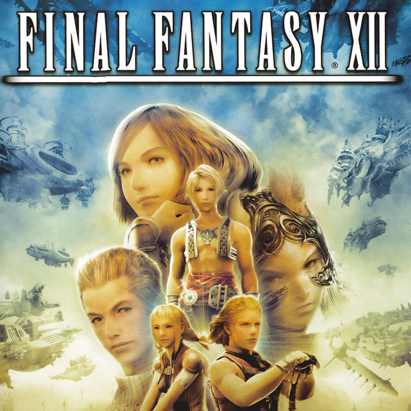
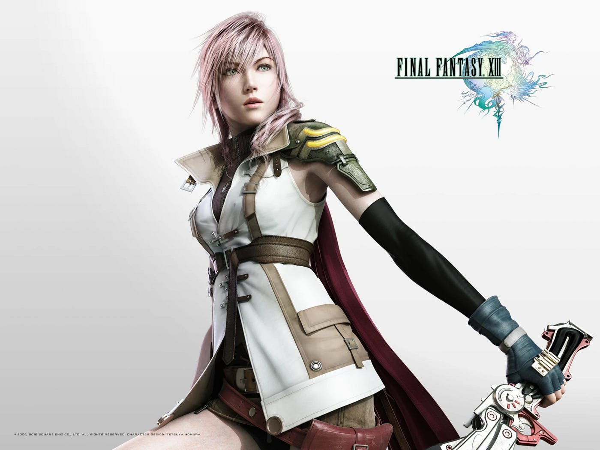
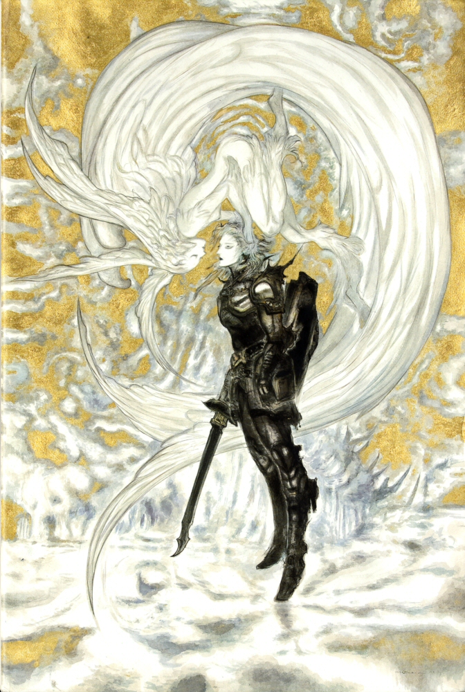
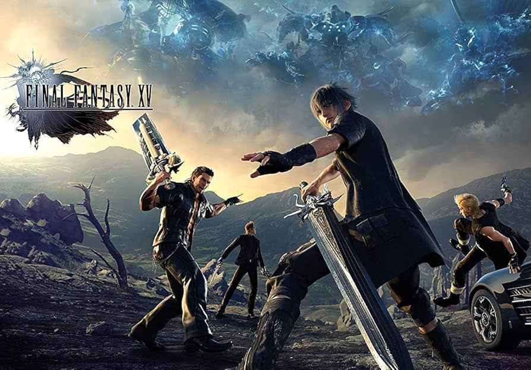
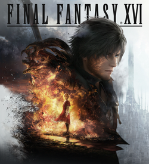

Final Fantasy X (2001)
FFX introduced voice acting and the Sphere Grid, delivering one of the
series’ most emotional stories. It marked the transition into the modern era of
cinematic storytelling. This title also introduced a numbered sequel game with Final Fantasy X-2, which was a first for the franchise.

Final Fantasy XI (2002)
The first MMORPG in the franchise, FFXI brought players into the persistent world
of Vana’diel. It became one of the longest-running online RPGs ever, supported by
numerous expansions over more than a decade.

Final Fantasy XII (2006)
Featuring a political narrative and the Gambit System, FFXII pushed the series
toward open-world design and strategic combat. Its world-building remains one of the
most ambitious in the franchise.

Final Fantasy XIII (2009)
Known for its fast-paced Paradigm System and striking visuals, FFXIII delivered
a cinematic, character-driven experience. It introduced Lightning, one of the most
iconic protagonists of the modern era. This title also had two sequels, FFXIII-2 and Lightning Returns: FFXIII, which continued the story of Lightning and expanded the lore of the XIII universe.

Final Fantasy XIV (2010 / 2013)
After a failed launch, FFXIV was rebuilt into A Realm Reborn, becoming one of
the most successful MMORPGs ever made. Its expansions continue to define the modern
Final Fantasy experience.

Final Fantasy XV (2016)
A road-trip adventure with real-time combat, FFXV modernized the franchise for a
new generation. Its open-world design and brotherhood-focused story made it a
standout entry.

Final Fantasy XVI (2023)
FFXVI embraced a darker tone and fast-paced action combat, redefining the series
once again. Its mature storytelling and Eikon-driven battles mark a bold new
direction for the franchise.
